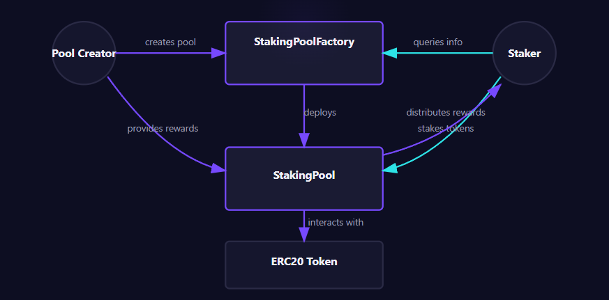
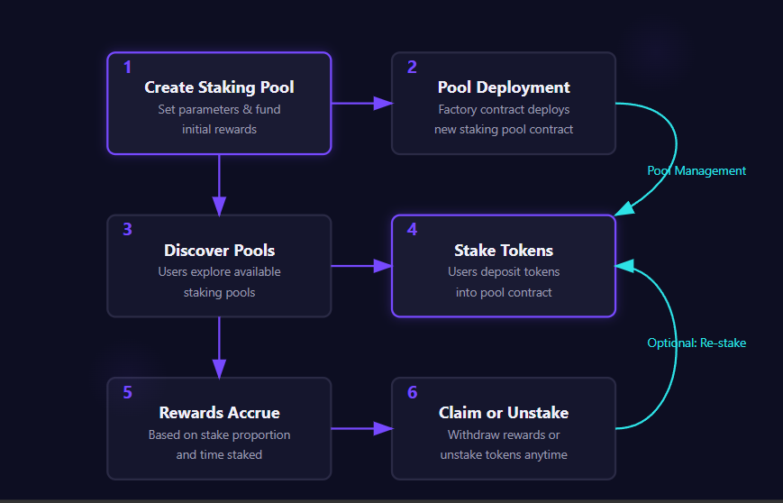

SINGLE STEAK
A Single-Sided Staking Protocol for PulseChain
Version 1.0.0
Abstract
Single Steak introduces a permissionless single-sided staking protocol built on PulseChain, designed to address the limitations of traditional liquidity mining and two-sided staking mechanisms. This paper outlines the economic and technical foundations of Single Steak, examining how our protocol enables token issuers to create customizable staking pools without the drawbacks of impermanent loss while providing token holders with predictable rewards structures. By eliminating the requirement for secondary tokens in staking pairs, Single Steak creates a more accessible, flexible, and sustainable tokenomic structure for emerging PulseChain projects and their communities.
Table of Contents
- Introduction
- Market Analysis
- Protocol Overview
- Technical Architecture
- Tokenomics and Reward Distribution
- Implementation
- Security Considerations
- Governance
- Roadmap
- Conclusion
- References
1. Introduction
1.1 Background
Staking and yield farming have emerged as fundamental mechanisms within decentralized finance (DeFi), providing incentives for token holders to contribute to protocol stability and liquidity. However, traditional approaches to staking, especially those requiring liquidity pairs, come with significant drawbacks—most notably impermanent loss, where the value of deposits can decline relative to a simple hold strategy due to price divergence in the token pair.
PulseChain, as an energy-efficient Ethereum fork, presents unique opportunities for innovative DeFi mechanisms. The ecosystem's focus on lower fees and faster transactions creates an ideal environment for a next-generation staking protocol that addresses existing limitations while taking advantage of PulseChain's technical benefits.
1.2 Problem Statement
Current staking models on PulseChain and other blockchain platforms face several challenges:
- Impermanent Loss: Traditional liquidity provision requires pairing tokens, exposing liquidity providers to potential losses when token prices diverge.
- Capital Inefficiency: Two-sided staking demands greater capital commitments and splits rewards across token pairs.
- Complexity: Managing liquidity positions, understanding impermanent loss, and optimizing for rewards creates a high barrier to entry.
- Protocol Sustainability: Many yield farming and staking mechanisms fail to create sustainable, long-term token models.
- Inflexible Reward Mechanisms: Projects struggle to adjust incentives based on changing market conditions or project stages.
1.3 Solution Overview
Single Steak addresses these challenges by providing a permissionless platform for creating and managing single-sided staking pools on PulseChain. The protocol enables:
- Creation of token-specific staking pools without requiring a paired asset
- Customizable reward rates with security-focused timelock mechanisms
- Pro-rata reward distribution based on stake proportion
- Transparent, predictable APY calculations
- Flexible pool management options for project teams
- User-friendly interfaces for both stakers and pool creators
By focusing exclusively on single-sided staking, Single Steak eliminates impermanent loss while providing a simpler, more accessible staking experience for users and more effective tokenomic tools for projects.
2. Market Analysis
2.1 Staking Landscape
The total value locked (TVL) in staking protocols across all blockchains exceeds tens of billions of dollars as of 2025, demonstrating the significant demand for yield-generating mechanisms in the crypto ecosystem. However, the market exhibits several trends that Single Steak is positioned to address:
- Growing Concerns about IL: As markets have experienced high volatility, awareness of impermanent loss has increased, leading to demand for alternative staking methods.
- Proliferation of New Tokens: PulseChain's growing ecosystem requires accessible tokenomic tools for new projects.
- Simplified DeFi: There is a clear market trend toward more user-friendly DeFi implementations that reduce complexity.
2.2 Target Market
Single Steak serves two primary market segments:
-
Token Projects/DAOs:
- New PulseChain projects seeking to establish tokenomic mechanisms
- Existing projects looking to enhance token utility and holder incentives
- DAOs managing community tokens
-
Token Holders:
- PulseChain users seeking yield opportunities
- Long-term token holders looking for rewards without additional exposure
- DeFi participants concerned about impermanent loss
2.3 Competitive Analysis
While staking protocols exist across multiple chains, Single Steak differentiates through:
| Feature | Single Steak | Traditional LP Staking | Basic Token Staking |
|---|---|---|---|
| Impermanent Loss | None | High | None |
| Capital Efficiency | High | Medium | High |
| Reward Flexibility | Customizable | Limited | Limited |
| User Complexity | Low | High | Low |
| Pool Creation | Permissionless | Platform-dependent | Requires Custom Contract |
| PulseChain Optimized | Yes | Limited | Limited |
2.4 SWOT Analysis
Strengths
- Elimination of impermanent loss
- Simplified user experience
- Customizable reward structures
- Native PulseChain integration
Weaknesses
- No incentivization for liquidity provision
- Dependent on individual projects' token economics
- New protocol without established history
Opportunities
- Growing PulseChain ecosystem
- Increasing awareness of impermanent loss issues
- Trend toward user-friendly DeFi
Threats
- Potential competition from multi-chain staking protocols
- Regulatory changes affecting staking programs
- General market downturns affecting TVL across DeFi
3. Protocol Overview
3.1 Core Principles
Single Steak is designed around four core principles:
- Simplicity: The protocol emphasizes user-friendly interfaces and straightforward mechanics.
- Flexibility: Customizable reward rates and pool parameters allow projects to tailor staking programs.
- Security: Time-locked updates and secure contract design protect both stakers and pool creators.
- Transparency: All reward calculations, APYs, and pool statistics are fully transparent.
3.2 Key Participants
The protocol involves three main participant types:
- Stakers: Users who deposit tokens into staking pools to earn rewards.
- Pool Creators: Projects or individuals who establish staking pools and provide initial rewards.
- Platform Maintainers: Protocol developers who maintain the platform and receive pool creation fees.
3.3 Workflow Overview

The protocol follows a simple workflow:
- A pool creator deploys a new staking pool via the factory contract, setting initial parameters and providing reward tokens.
- Stakers discover the pool and deposit tokens.
- Rewards accrue to stakers in real-time based on their proportion of the total stake.
- Stakers can claim rewards or unstake at any time without penalties.
- Pool creators can add rewards or adjust rates (subject to timelock) to maintain the pool.
4. Technical Architecture
4.1 Contract Structure
Single Steak employs a factory pattern with two primary contract types:
-
StakingPoolFactory Contract:
- Central registry for all staking pools
- Handles pool creation and configuration
- Manages platform fees
- Maintains pool metadata
-
StakingPool Contract:
- Manages token staking and withdrawal
- Calculates and distributes rewards
- Enforces timelocks on parameter changes
- Tracks user positions and rewards
4.2 Contract Interactions

Key interactions within the system include:
-
Pool Creation:
Pool Creator -> StakingPoolFactory -> StakingPool
-
Staking Process:
Staker -> StakingPool -> Token Contract
-
Reward Distribution:
StakingPool -> Staker
4.3 Technical Specifications
The protocol implements several technical features:
-
Reward Distribution System:
- Pro-rata rewards based on proportional stake
- Continuous accrual model using "reward per token" accounting
- Optimized for gas efficiency through specialized calculation methods
-
Timelock Mechanism:
- 24-hour delay on reward rate changes
- Two-phase commit process for parameter updates
- Cannot be bypassed, even by pool owner
-
ERC20 Compatibility:
- Compatible with all standard ERC20 tokens on PulseChain
- No modifications to token contracts required
-
Pool Metadata Storage:
- On-chain storage of essential pool information
- SVG-based dynamic pool icons generated from cash tags
4.4 User Interface Integration
The protocol's front-end components include:
- Pool Explorer: Searchable, filterable interface for discovering staking pools
- Staking Dashboard: User-focused interface showing positions and rewards
- Pool Creation Interface: Step-by-step wizard for creating new staking pools
- Pool Management Dashboard: Tools for pool creators to manage existing pools
5. Tokenomics and Reward Distribution
5.1 Reward Mechanism
Single Steak implements a sophisticated reward distribution system based on the following principles:
- Time-Based Accrual: Rewards accrue continuously based on each user's stake proportion.
- Pro-Rata Distribution: Rewards are allocated proportionally to each staker's share of the total pool.
- Global Rate Governance: Pool creators set a global reward rate that applies universally.
The core reward formula is:
UserReward = (UserStake / TotalStaked) * RewardRate * TimePeriod
Where:
- UserStake is the amount staked by a specific user
- TotalStaked is the sum of all tokens staked in the pool
- RewardRate is the tokens distributed per second
- TimePeriod is the duration in seconds
5.2 APY Calculation
Annual Percentage Yield (APY) is calculated as:
APY = (RewardRate * SecondsPerYear / TotalStaked) * 100
This provides a standardized metric for comparing pools. Important characteristics of the APY mechanism:
- All users within a pool receive the same APY percentage
- APY decreases as more tokens are staked (assuming constant reward rate)
- Pool creators can adjust the reward rate to target specific APY ranges
5.3 Fee Structure
The protocol implements a minimal fee structure:
- Pool Creation Fee: One-time fee paid in PLS when creating a new pool
- No Ongoing Fees: No fees for staking, unstaking, or claiming rewards
- No Protocol Token: The platform operates without requiring its own token
5.4 Economic Incentives
The economic design creates aligned incentives for all participants:
-
For Stakers:
- Rewards proportional to commitment
- No impermanent loss risk
- Flexibility to enter/exit at will
-
For Pool Creators:
- Enhanced token utility
- Community engagement
- Strategic control over incentives
-
For Platform Maintainers:
- Sustainable income from creation fees
- Growth incentives tied to platform adoption
6. Implementation
6.1 Smart Contract Implementation
The core contracts are implemented in Solidity, optimized for the PulseChain environment. Key implementation details include:
StakingPoolFactory.sol:
// Factory contract excerpt
function createPool(
address stakingToken,
string calldata tokenName,
string calldata tokenSymbol,
string calldata poolImageUrl,
uint256 initialRewardRate
) external payable returns (address) {
require(msg.value >= poolCreationFee, "Insufficient creation fee");
// Deploy new staking pool
StakingPool newPool = new StakingPool(
stakingToken,
tokenName,
tokenSymbol,
poolImageUrl,
initialRewardRate,
msg.sender
);
// Register pool
stakingPools.push(address(newPool));
developerPools[msg.sender].push(address(newPool));
// Transfer fee to recipient
payable(feeRecipient).transfer(msg.value);
emit PoolCreated(address(newPool), stakingToken, msg.sender);
return address(newPool);
}
StakingPool.sol:
// Reward calculation excerpt
function rewardPerToken() public view returns (uint256) {
if (totalStaked == 0) {
return rewardPerTokenStored;
}
return rewardPerTokenStored + (
((lastTimeRewardApplicable() - lastUpdateTime) * rewardRate * 1e18) / totalStaked
);
}
function earned(address account) public view returns (uint256) {
return (
userStakedAmount[account] *
(rewardPerToken() - userRewardPerTokenPaid[account])
) / 1e18 + rewards[account];
}
6.2 Front-End Implementation
The front-end is implemented using modern web technologies:
- Framework: HTML5, CSS3, JavaScript
- Web3 Integration: ethers.js for blockchain interactions
- Responsive Design: Mobile-first approach for all interfaces
- SVG Generation: Dynamic pool icon creation based on cash tags
6.3 Deployment Architecture
The platform follows a decentralized deployment model:
- Smart Contracts: Deployed on PulseChain mainnet
- Front-End: Static website hosted on IPFS for censorship resistance
- Backend Services: None - fully decentralized architecture
7. Security Considerations
7.1 Security Model
Single Steak's security model addresses several risk vectors:
-
Smart Contract Risks:
- Reentrancy protections in all withdrawal functions
- No external calls in critical functions
- Proper integer overflow/underflow protection
-
Economic Security:
- Timelocks to prevent flash loan attacks on reward rates
- Separation of user funds from protocol operations
- No privileged roles with access to user funds
-
Operational Security:
- Factory contract with minimal upgradeability
- No admin keys with extraordinary powers
- Transparent, predictable behavior
7.2 Audit Status
Pending
7.3 Known Limitations
The protocol has several acknowledged limitations and constraints:
- Pool Creator Trust: Users must trust pool creators to maintain adequate rewards
- No Native Compounding: Rewards must be manually claimed and re-staked
- Single Token Limitation: Each pool supports only one token type
- No Internal Price Oracles: No native price discovery mechanism
8. Governance
8.1 Current Governance Structure
In its initial implementation, Single Steak operates with minimal governance:
- Factory Contract Management: Basic parameters (creation fee, fee recipient) controlled by factory owner
- Pool Independence: Individual pools are controlled solely by their creators
- No Protocol-Wide Governance: No voting or proposal mechanisms for general protocol changes
8.2 Future Governance Considerations
The roadmap includes potential governance enhancements:
- DAO Structure: Potential transition to community governance
- Parameter Optimization: Community-driven refinement of protocol parameters
- Fee Distribution: Mechanisms for broader distribution of platform fees
9. Roadmap
9.1 Phase 1: Initial Deployment (Current)
- PulseChain mainnet deployment
- Basic staking pool functionality
- Pool creation and management tools
- User staking interface
9.2 Phase 2: Enhancement (Q3 2025)
- Advanced analytics dashboard
- Expanded pool customization options
- Mobile optimization
- Social features and sharing tools
9.3 Phase 3: Expansion (Q1 2026)
- Multi-pool staking strategies
- Enhanced reward structures
- Potential governance implementation
- Cross-chain bridging considerations
10. Conclusion
Single Steak represents a significant advancement in staking protocols, addressing the critical limitations of traditional liquidity mining and two-sided staking mechanisms. By eliminating impermanent loss, simplifying the user experience, and providing flexible tools for token projects, the protocol creates a more accessible, efficient staking ecosystem on PulseChain.
The combination of transparent reward mechanics, customizable parameters, and security-focused design positions Single Steak as a fundamental infrastructure component for PulseChain's growing DeFi ecosystem. As the platform evolves, it will continue to prioritize simplicity, security, and user-centric design while expanding its capabilities to meet the needs of the broader blockchain community.
11. References
- PulseChain Documentation: https://pulsechain.com/
- "Impermanent Loss in DeFi: Analysis and Mitigation Strategies," Journal of Blockchain Research, 2023.
- EIP-20: ERC-20 Token Standard: https://eips.ethereum.org/EIPS/eip-20
- "Single-Sided vs. Two-Sided Staking: A Comparative Analysis," DeFi Research Foundation, 2024.
- "Timelock Mechanisms in DeFi Governance," Blockchain Security Journal, 2024.
This white paper represents the current design of the Single Steak protocol as of May, 2025. The project team reserves the right to make changes to the implementation details while maintaining the core principles outlined herein.